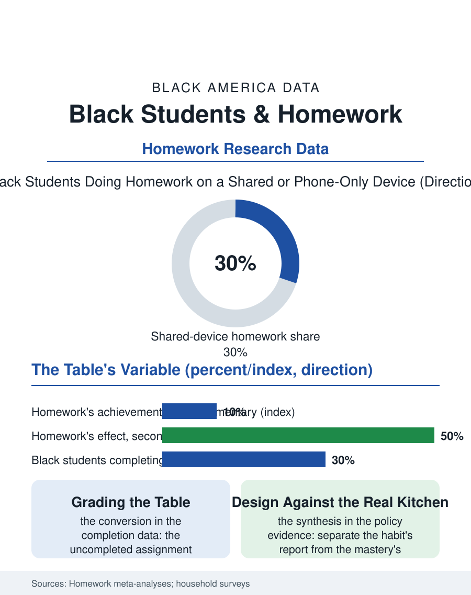

Black Education
Grading the Table: Black Students and Homework
The same assignment lands on two different kitchen tables, and the grade too often scores the table. The homework file.

Homework is the school day's exported labor, and its file contains the education debate's purest inversion: the research consensus gives homework its smallest effects in the elementary years where it is most assigned as ritual, and the home environments across which it is assigned differ in every resource the assignment assumes, the quiet room, the connected device, the available adult, the dinner's timing. This article reads the homework file.
The Assignment's Assumptions
The homework gap research begins with the assignment's implicit household: the studies of homework completion by income and race record the differential the teachers observe, and the environment surveys locate it, the Black student's homework setting in the data more likely to be the shared room, the sibling's care part of the evening's duties, the parent's shift running through the homework hour, the device shared or the connection the smartphone file's metered one, so that the completion gap measures the household's resources in the school's units, and the grade's penalty for the uncompleted assignment then taxes the poverty it measured, a conversion the homework abolitionists of the current debate make their central exhibit. The achievement file's honesty requires the other column: the practice effects are real in the secondary mathematics and the reading volume literature, the homework as the deliberate practice the classroom's hours cannot contain, and its completion is itself a trained behavior the successful student's file is built on, so that the file's mature question is not the homework's existence but its design against the actual households it lands in. The summer reading file is the homework's seasonal twin, the assigned books whose completion the autumn measures, and its distribution by the home's book supply and the library's summer hours reproduces the same table in seasonal dress, so that the policy's whole argument, the practice's design against the actual household, repeats at the larger scale of the vacation.
The Policies' Experiments
The districts' experiments give the file its policy data: the elementary homework abolitions and reductions of the current era, adopted by the districts that read the effect sizes, the flipped and in-class practice models that move the practice into the supervised hours, the homework hotlines and the library's evening hours of the municipal partnerships, and the grading reforms that separate the practice's completion from the achievement's grade, reporting the work habits on their own line so that the transcript stops converting the household's resources into the student's recorded ability. The pandemic furnished the file's involuntary national experiment, the homework becoming the schooling entire for a year in the households this file describes, and its results, the learning loss distribution of the test data, are the homework gap written at the scale of the whole curriculum, the strongest evidence the file owns of what the assignment's assumptions cost when they fail at volume. The family's own file, the parent's homework role, is the debate's tender ground: the helping parent's effect in the studies is positive for the presence and the routine and negative for the takeover, a distinction the schools' family guidance rarely draws at the kitchen table's hour.
Practice, Placed Where It Can Happen
The homework file closes on the design synthesis the evidence supports, which neither the abolition nor the tradition's defenders own entire: the practice matters, the place decides whether it happens, and the school's choices, the in-school practice block, the assignment sized to the independent reader, the resources loaned with the task, the grade's separation of the habit from the mastery, compose the difference between the homework as the household's audit and the homework as the student's tool. The after-school file is the homework's institutional answer where it exists, the program's homework hour being its most used and least celebrated service, the supervised room and the available tutor supplying exactly the assumptions the assignment makes. The surveys count the minutes the students report each night. The file's last entry is the kitchen table's two versions, the quiet one of the assignment's imagination and the real one at the shift's end with the sibling and the shared device, and the proposition the data leave standing between them: the work is the same, the table is the variable, and the school that grades the table has mistaken its own homework for the student's.
More in Black Education
Black Educational Attainment: High School Parity, the College Gap
About 89 percent of Black adults hold a high school diploma and one in four holds a bachelor's degree or higher — the attainment ladder, the college completion gap, and the generational trend.
Historically Black Colleges and Universities: Enrollment and Degrees
More than 100 HBCUs enroll roughly 290,000 students and award about one in six Black bachelor's degrees — an outsized share from a small sector. The federal education data.
Black College Enrollment: 2.4 Million Students
About 2.4 million Black students are enrolled in American colleges — nearly two-thirds of them women. The NCES enrollment data by sector, level, and trend.
Source: Duke and meta-analytic homework research (Cooper et al.); National Center for Education Statistics homework environment data.